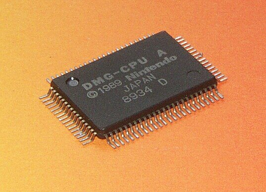

DMG-CPU Research Wiki

1Purpose of the Research
DMG-CPU is a fairly well researched chip. It is difficult to add something and not to repeat :-) That's why we will try to make the result of the research an addition to what is already known.
The main goal (as in our other projects) is to get a netlist on Verilog, preferably as close as possible to the real chip ("die-perfect"). For this purpose we use the Deroute utility, which allows us to export ready-to-use Verilog at once.
Then the reader has 2 options: either to "understand" the decompiled netlist (which in principle has already been done in @msinger's work), or to use it "without understanding" in other projects.
Contents
- Reference PCB
- SoC Overview
- I/O Terminals & Bonding Pads
- Cells Library
- CLK Generator
- Serial Link
- SM83 Core (SM83 core testbench)
- Bus Arbiter
- Memory-mapped I/O
- HRAM
- PPU (PPU testbench)
- ClkGen / Arb / MMIO / Ser (small-domain testbench)
- APU testbench
- Icarus testbenches & tooling (GTKWave skill)
- OAM
- APU
- Wave RAM
- Boot ROM
- Sound Output DAC
Latch vs DFF vs DLatch vs FF
On this site we use the following conventions for terminology:
- Latch is a static memory element that responds to signal level (0/1)
- DFF is a static memory element which reacts to level change (1->0 aka negedge, 0->1 aka posedge)
- At the same time "FF" (FlipFlop, no D) - we call 2 elements (usually
notornor) cyclically closed to each other and used as a static memory cell. - DLatch is a dynamic memory element, which is stored on the FET gate. If it is not refreshed periodically, the value "fades away".
You may have heard other definitions on other sites/Wikipedia, but they are different everywhere (depending on the context), so we clearly define them.
- Static memory elements: they store their value always and "forever", regardless of whether the CLK changes or not
- Dynamic memory elements: they store their value on the FET gate, so they can get "corrupted" if not refreshed for a long time
Signals Disclaimer
I understand that everyone wants the signals to be called by human-readable and proper names. DMG-CPU study was conducted at different times, so sometimes you can see strange signal names.
Do not expect that all of them are quickly renamed to proper names. Such a process runs the risk of turning the study into signal renaming and nothing more.
From experience - frequent renaming of signals also contributes to various errors and confusion.
Renaming a signal does not make it work differently 😄
Signal names are mostly in snake_case notation, if another one is used, it was before snake_case was decided to be used :)
Progress
| Case | Top-Level | Pads | Memory | DAC | ClkGen | Ser | MMIO | Arb | PPU | APU | SM83 |
|---|---|---|---|---|---|---|---|---|---|---|---|
| Topology | ✅ | ✅ | ✅ | ✅ | ✅ | ✅ | ✅ | ✅ | ✅ | ||
| List of ports with description | ✅ | ✅ | ✅ | ✅ | ✅ | ✅ | ✅ | ✅ | ✅ | ✅ | ✅ |
| Map of cells/modules | ✅ | - | ✅ | ✅ | ✅ | ✅ | ✅ | ✅ | ✅ | ||
| Netlist | ✅ | - | ✅ | ✅ | ✅ | ✅ | ✅ | ✅ | ✅ | ||
| Verilog | ✅ | ✅ | ✅ | ✅ | ✅ | ✅ | ✅ | ✅ | ✅ | ||
| Design extracted from PlanAhead | ✅ | - | ✅ | ✅ | ✅ | ✅ | ✅ | ✅ | ✅ | ||
| Verification with @msinger | ✅ | ✅ | - | ✅ | ✅ | ✅ | ✅ | ✅ | ✅ | - |
Reference
- Game Boy DMG CPU Schematics by @msinger and contributors: https://github.com/msinger/dmg-schematics/ . This is the main source of both correct schematics and signal names, as well as cross-checking.
- DMG-CPU B Map by @msinger: http://iceboy.a-singer.de/dmg_cpu_b_map/
- DMG-CPU Cells Reference by @msinger: http://iceboy.a-singer.de/doc/dmg_cells.html
- Game Boy -related schematics by @Gekkio: https://github.com/Gekkio/gb-schematics/
- Game Boy hardware research by @Gekkio: https://github.com/Gekkio/gb-research/ . This repository is used for cross-checking circuits and simulation of the SM83 core
- I will not recommend @furrtek's DMG-CPU-Inside research as it contains a lot of errors and the author seems to have completely lost interest in the project and is not going to fix it
- GAMEBOY Programming Manual: https://archive.org/details/GameBoyProgManVer1.1
- DMG LCD Research: https://github.com/ogamespec/dmg-lcd
- MBC1 Mapper: https://github.com/emu-russia/mappers/tree/main/MBC1
-
DMG-CPU A Photo by Christian Bassow: https://commons.wikimedia.org/wiki/File:Nintendo_DMG_CPU_1.jpg ↩